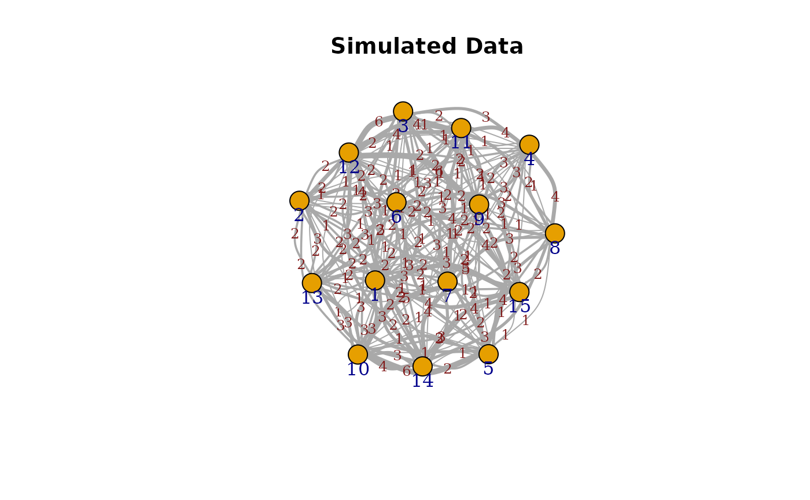

This function generates a simplified edge plot of an igraph object, optionally highlighting communities if provided.
Arguments
- graph
igraph object
- communities
optional; A communities object
- edge.arrow.size
edge.arrow size arg. See ?igraph::plot.igraph for more details
- ...
other arguments to be passed to the
plot()function
Details
This function is ideally for networks with a low number of nodes having varying numbers of connection and self loops. See the example for a better visual understanding.
Examples
# Load the igraph package
library(igraph)
library(ig.degree.betweenness)
# Set parameters
num_nodes <- 15 # Number of nodes (adjust as needed)
initial_edges <- 1 # Starting edges for preferential attachment
# Create a directed, scale-free network using the Barabási-Albert model
g <- sample_pa(n = num_nodes, m = initial_edges, directed = TRUE)
# Introduce additional edges to high-degree nodes to accentuate popularity differences
num_extra_edges <- 350 # Additional edges to create more popular nodes
set.seed(123) # For reproducibility
for (i in 1:num_extra_edges) {
# Sample nodes with probability proportional to their degree (to reinforce popularity)
from <- sample(V(g), 1, prob = degree(g, mode = "in") + 1) # +1 to avoid zero probabilities
to <- sample(V(g), 1)
# Ensure we don't add the same edge repeatedly unless intended, allowing self-loops
g <- add_edges(g, c(from, to))
}
# Add self-loops to a subset of nodes
num_self_loops <- 5
for (i in 1:num_self_loops) {
node <- sample(V(g), 1)
g <- add_edges(g, c(node, node))
}
ig.degree.betweenness::plot_simplified_edgeplot(g,main="Simulated Data")
